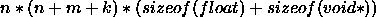
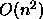

int krui_createDefaultUnit()
creates a unit with the properties of the (definable) default values of the
kernel. The default unit has the following properties:

standard activation and output function
standard activation and bias standard position-, subnet-, and layer number
standard position-, subnet-, and layer number default IO type
default IO type no unit prototype
no unit prototype no sites
no sites no inputs or outputs
no inputs or outputs no unit name
no unit name
Returns the number of the new unit or a (negative) error code. See also
include file kr_def.h.
int krui_createUnit( char *unit_name, char *out_func_name,
char *act_func_name, FlintTypeParam i_act,
FlintTypeParam bias)
creates a unit with selectable properties; otherwise like
krui_createDefaultUnit(). There are the following defaults:
 standard position-, subnet-, and layer number
standard position-, subnet-, and layer number
 default IO type
default IO type
 no unit prototype
no unit prototype
 no sites
no sites
no inputs or outputs
Returns the number of the new unit or a (negative) error code. See also
include file kr_def.h.
int krui_createFTypeUnit( char *FType_name)
creates a unit with the properties of the (previously defined)
prototype. It has the following default properties:
 standard position number, subnet number and
layer number
standard position number, subnet number and
layer number
 no inputs or outputs
no inputs or outputs
The function returns the number of the new unit or a (negative) error
code.
krui_err krui_setUnitFType( int UnitNo, char *FTypeName )
changes the structure of the unit to the intersection of the current
type of the unit with the prototype; returns an error code if this
operation has been failed.
int krui_copyUnit( int UnitNo, int copy_mode)
copies a unit according to the copy mode. Four different copy modes
are available:
 copy unit with all input and output connections
copy unit with all input and output connections
 copy only input connections
copy only input connections
 copy only output connections
copy only output connections
 copy only the unit, no connections
copy only the unit, no connections
Returns the number of the new unit or a (negative) error code. See
glob_typ.h for reference of the definition of constants for
the copy modes.
krui_err krui_deleteUnitList( int no_of_units, int unit_list[] )
deletes 'no_of_units' from the network. The numbers of the units that
have to be deleted are listed up in an array of integers beginning
with index 0. This array is passed to parameter 'unit_list'. Removes
all links to and from these units.